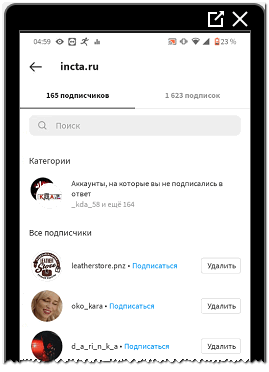
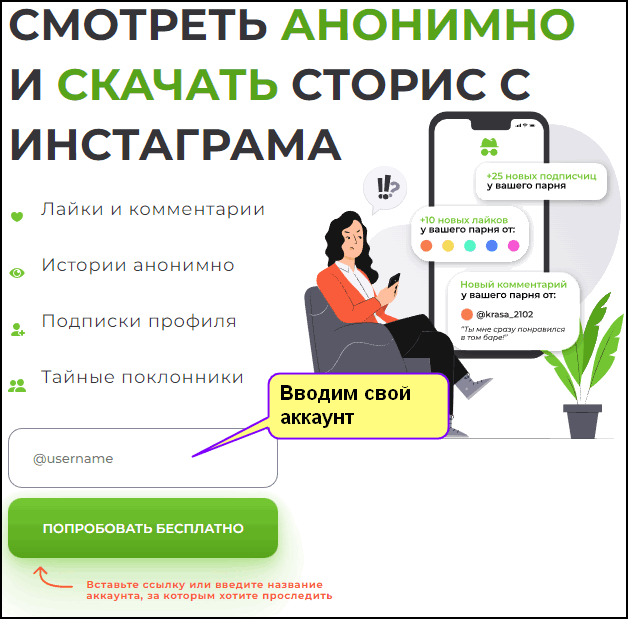
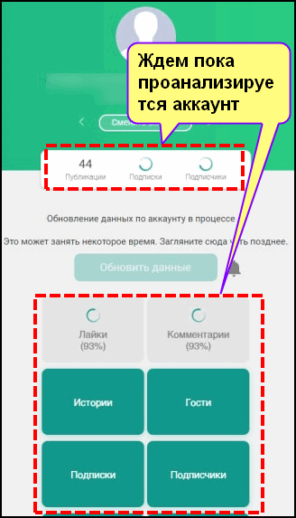
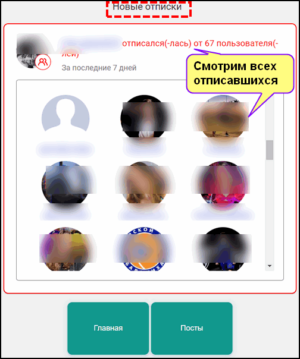
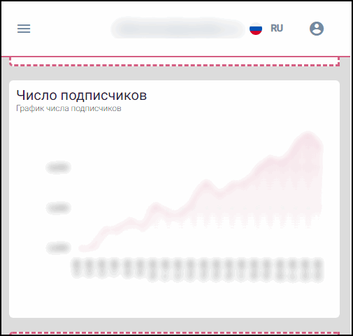
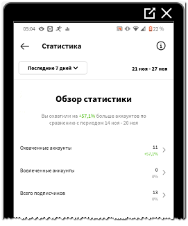
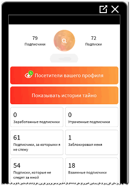

Как узнать кто отписался в Инстаграме - ТОП 5 способов отслеживания отписчиков

Узнать, кто отписался в Инстаграме* можно несколькими способами: использовать мобильные приложения, через веб-версии или отследить самостоятельно. Предварительно пользователь может получить или составить список своих фанатов.
Определить отписчиков в Инстаграме* через подписчиков
Через список своих фанатов можно посмотреть, кто был отписан за последнее время. Такой вариант сработает на небольших блогах, где каждый подписчик узнаваем по никнейму. Проверить, кто от тебя отписался в Инстаграме* можно такими способами:
- получить базу данных страницы, где есть список подписчиков;
- воспользоваться мобильным приложением или компьютерной версией, чтобы посмотреть.
Как определить с помощью списка последователей:
- Зайти в Инстаграм* через приложение.
- Мой профиль – нажать сверху по разделу: «Подписчики».

- Ввести в строку поиска ник или его первые буквы.
Если выбранного человека нет в перечне – значит он отписался. В глобальном поиске можно проверить, подписан или просто заблокировал. Нажать снизу по кнопке в виде «лупы» и вписать в поиске ник. Там пользователь сможет проверить такие изменения в чужом аккаунте:
- блокировка. Возможно, страницу искомого человека просто заблокировали, а не он отписался;
- отписку и «черный список». Тогда профиль может быть активен, но не будут доступны публикации, аватарка.
Если с этим человеком была переписка – то нужно с помощью Директа перейти на страницу и проверить.
100% способ узнать кто отписался от вашего аккаунта в Инстаграм*
Наверное один из немногих сервисов, который мониторит отписчиков и показывает подробную статистику по вашей странице. Чтобы проверить профиль на отписавшихся:
- Переходим в сервис Инсташпион и вводим свой аккаунт.

- Начинаем полный анализ по всем параметрам.

- Смотрим все странички, которые от вас отписались.

На данный момент это единственный адекватный сервис, который может предоставить данную информацию. При поиске мы проанализировали все возможные сайты в РУ сегменте, остановились на Инсташпионе - пробуйте!
Увидеть через сервис InstaHero: рост активности
Я пользуюсь сервисом topnakrutok, с помощью которого можно посмотреть, кто последним подписался или отписался, какой объем аудитории. Активность на странице выстроена в виде диаграммы, где есть повышение, когда на профиль подписались новые люди.
Как посмотреть, кто отписался в Инстаграме*:
- Зайти в InstaHero – создать новую учетную запись.
- Подключить свой профиль – перейти в раздел: «Мониторинг».

- Сводные данные – посмотреть прирост и убавление подписчиков.
Сервис не показывает, кто именно отписался, но с его помощью можно проверить статистику аккаунта и получить подробную информацию.
Узнать через статистику в профиле
Отследить, кто отписался в Инстаграме* на бизнес-профиле возможно через встроенную статистику. Это раздел, который показывает активность аудитории, последние популярные публикации и действия в профиле.
Посмотреть статистику смогут только владельцы бизнес и профилей «авторов».
Как отследить активность и отписчиков:
- Зайти в Инстаграм* – нажать сверху по трем полоскам.
- Выбрать: «Статистика» - Подписчики.

- Посмотреть, какое количество было добавлено или удалилось.
В этой вкладке становится доступна информация, как только владелец профиля достигает значения в 100 подписчиков. До этого – будет функционально ограниченный раздел. С помощью статистики можно посмотреть, откуда пришла аудитория, какой язык использует и где проживает. Эти сведения используют для дальнейшего продвижения услуг, поиска новых подписчиков.
3 лучших приложения на Андроид
Для устройств под управлением Android есть три приложения, которые показывают подписчиков и отписчиков. Они работают после того, как пользователь установит, то есть – отображают отписчиков по тому периоду, когда уже было загружено приложение. Узнать, кто отказался от подписки год или более назад – невозможно. ТОП-3 приложения на Android:
- Reportly. Трекер отписавшихся, который отображает данные по странице в Инстаграме* и последние изменения;
- Unfollowers. Простое приложение: выводит подробную статистику по аккаунту;
- Follower Analyzer. Выполняет те же задачи, отображает гостей профиля.
С помощью Reporly можно отслеживать посетителей, кто отписался или следит тайно за страницей.
Как использовать приложение:
- Зайти в Play Market – ввести название: «Reportly» (или перейти по ссылке выше).
- Скачать и установить приложение – открыть.

- Авторизоваться в своем профиле в Инстаграме*.
- Подождать, пока загрузится информация о странице.
Помимо отписчиков, показывает кто заблокировал, последователей которые постоянно следят за аккаунтом. Половина данных появляется из-за взаимодействий с контентом: лайки, комментарии.
2 крутых приложения для iOS
Для операционной системы iOS есть приложения, которые помогут отследить отписки. В отличие от приложений на Android, функционал ограничен. Политика Инстаграма* устанавливает правила конфиденциальности, куда входит информация о блокировке и отписках. Поэтому на смартфонах Apple отсутствуют некоторые функции сторонних приложений, отображающих статистику. Для iOS:
- Mass Unfollow for Instagram*. Выполняет роль менеджера: показывает статистику, помогает массово отписываться от подписок;
- Twitly. Контроль за количеством подписчиков, как в Инстаграме*, так и в Твиттере.
Как воспользоваться Twitly:
- Зайти в AppStore – ввести название приложения.
- Скачать и установить – открыть.
- Подключить свой аккаунт
- Перейти во вкладку: «Подписчики».
Помимо того, что можно отслеживать подписки и отписки, можно взаимно подписаться или наоборот удалить человека из подписок. Такой вариант подходит, если владельцу профиля нужно сделать массовую рассылку сообщений и получить отклик от аудитории.
Что делать, если отписываются в Инстаграме*
Узнать, кто удалил меня из подписок в Инстаграме* несложно, если регулярно следить за списком последователей. Но случается, что от профиля массово отписываются. Это происходит по таким причинам:
- последние публикации вызвали бурную реакцию аудитории. В основном, негативную;
- автор перестал регулярно делиться контентом;
- профилю сделали антирекламу;
- страница попала под «теневую блокировку».
Чтобы проверить антирекламу, нужно перейти к глобальному поиску и вписать свой ник без символа «@». Появится список хештегов, упоминания в публикациях. Проще выполнить поиск через стандартные системы Google или Яндекс, потому что в них индексируются публикации из Инстаграма*.
Проверить теневой бан возможно через статистику. Автору нужно сделать еще один пост и посмотреть, какая активность будет. Далее – сравнить с предыдущими постами, которые получили наибольшее количество откликов.
Последняя причина, почему могут отписываться в Инстаграме* – недавно проведенный конкурс. Во время мероприятия подписались те, кто планировал выиграть, но контент их не заинтересовал. После розыгрышей и конкурсов отписки не частный случай.